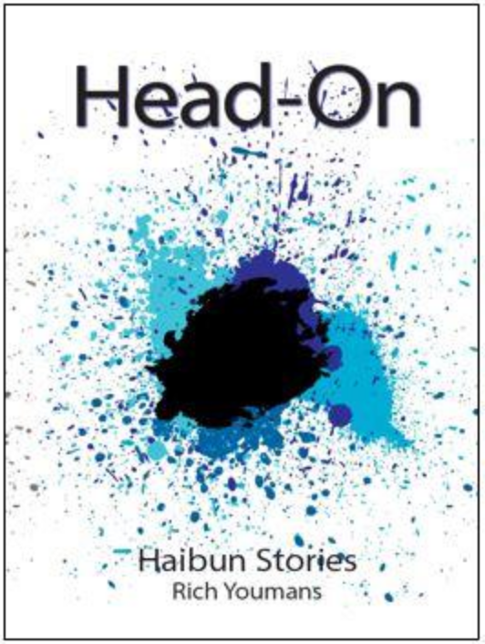

Rich Youmans, Head-On: Haibun Stories, A Review by Patricia Prime
Rich Youmans, Head-On: Haibun Stories, Red Bird Chapbooks. MN (2018), RRP: $12. Pb. 26pp. Ltd edition 100 copies.
Head-On is Rich Youmans’ sketchbook and diary-like reminiscences of life both outdoor and within. The title haibun, “Head-On” (9), proceeds in a reflective tone recalling “Driving toward the concert along a back road dense with insects and pine . . .” The poem is painterly, rendered like a fine miniature. Life changes in a flash when the couple come across an accident:
His wife no longer hums her favourite Bach, and he has stopped thinking of the concert. Instead, he concentrates on the road, on the insects flicking through the headlight beams.
At the beginning of “you cannot turn” (12), Youmans writes:
the key, it is in the ignition, and your fingers tense around its pebbled casing, but you cannot turn it, you cannot move. you have stalled at a downtown intersection, late at night, in a downpour so hard the wipers can’t keep up; they flail back and forth as if waving in surrender.
We can almost see “the bar where it all began”; the woman “sitting alone in a sleeveless black top” and the scars on her body. The poem lends still-life detail to the scene, as the car the protagonist drives through the stormy night stalls and, while being addressed by a policeman, he recalls the woman:
. . . you see her hair, her eyes, that trail of hearts. look at me please, sir. you cannot turn . . .
The human is always set in proportion to the landscape, as we see in “Depth Perception” (15), where a girl “sits in the middle of the classroom”. Small regrets of life are brought into perspective in stark relief:
At the top of the page, the girl’s hand sketches a new drawing; ocean swells fanning outward, a schooner under full sail, and, near the horizon’s vanishing point, a single star just big enough for one final wish.
A protest against losing one’s sight, featured in “Thrown” (17) haunts the collection. The frustration and self-pity depicted in a woman who is losing her sight becomes frustrating also to the reader. But once she starts attending pottery classes, life changes for the better. Now she can make things and prepare a cup of tea:
In the spring, she made a long, thin vase, and her husband chose a flower with the most fragrant scent. By then she had begun to tackle household chores: dusting, setting the table. She creates pieces that make everyone scratch their heads.
Memory, too, such as we read about in “Sleight of Hand” (19), is rife with Youmans’ skilful realisation of the past. He achieves a ring of truth with his portrayal of his father returning from work, trudging into the kitchen in his gray overalls. Youmans depicts his father’s “tired blue eyes” and his wish that his son might go to college and get a good job. Here, we see the love between father and son, but also the memory of a father wanting “life to be full of wonder”. The son doesn’t know how to respond to his father’s wishes, but then his mother stroked her husband’s hair, “and his eyes grew round.”
“Finding Bach in the Pine Barrens” (21) depicts another night-time drive. It is a shorter piece, ending with six haiku. Here, the persona recalls the woman who used to be beside him in the car:
When he turns on the radio, he hears that same Bach prelude, that first kiss under a summer’s evening sky – and even her voice when she whispered her final words to him.
No more fully represented is the defiant permanence of memory than in the image in this haiku:
swelling strings –
her fingertips brush
his forearm
I do admire Youmans’ observational skills and my favourite haibun are those that capture a specific picture in an arresting way, as in “Connecting the Constellations” (25), which is a one paragraph haibun. Here, the protagonist, Belle, is pointing to a cluster of stars and her partner is describing the constellation to her. The haibun ends with the one-line haiku:
new love not seeing the star seeing the star
Again, in “Dance with Me” (26), we see Youmans’ great gift for description. In this poem, Belle features once more, where she is dancing with her partner, although she now has arthritis in her thumb, and he has a twinge in his back and an ache in his shoulder. The haibun ends:
The strings swell, the tambourine shimmers, the old bones
turn lighter and lighter: Darling won’t you please . . . won’t you
please . . . won’t you please . . .
their song –
flecks of gray
spark in candle glow
It is a charming poem with which to end the collection.
Head-On is a strong, reflective collection. The haibun are skilled and written by a practiced hand. The poems display deep feeling; the language is refreshing, and the characters stand before us, suddenly familiar and bathed in new light. A masterly gathering, astutely balanced. A joy to read.
|